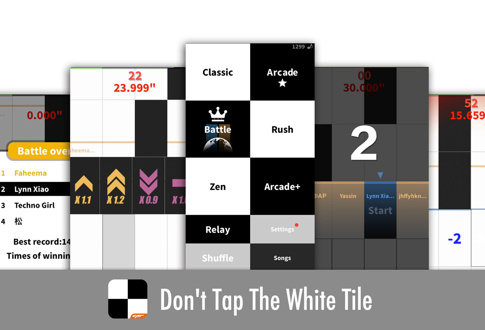

A girl who LOVES game.
stand up to bad things through love and peace
Don't Tap The White Tile

"Yanshuo.io" is an online full-featured presentation software to create Web-based slides which are linkable, sharable, cross-platform and without delivery friction. It differentiate from traditional presentation tools such as Powerpoint and Keynote due to its web-friendly and its strong belief in Web.
BusyWeek! is a time-based Todo application, available on Web and Apple App Store, which also support the backup and restore to and from the cloud.
It's material-designed, truly responsive across platforms and based on modern web technologies including HTML5, CSS3, Sass and powerful Vue.js.
BusyWeek! is a time-based Todo application, available on Web and Apple App Store, which also support the backup and restore to and from the cloud.
It's material-designed, truly responsive across platforms and based on modern web technologies including HTML5, CSS3, Sass and powerful Vue.js.